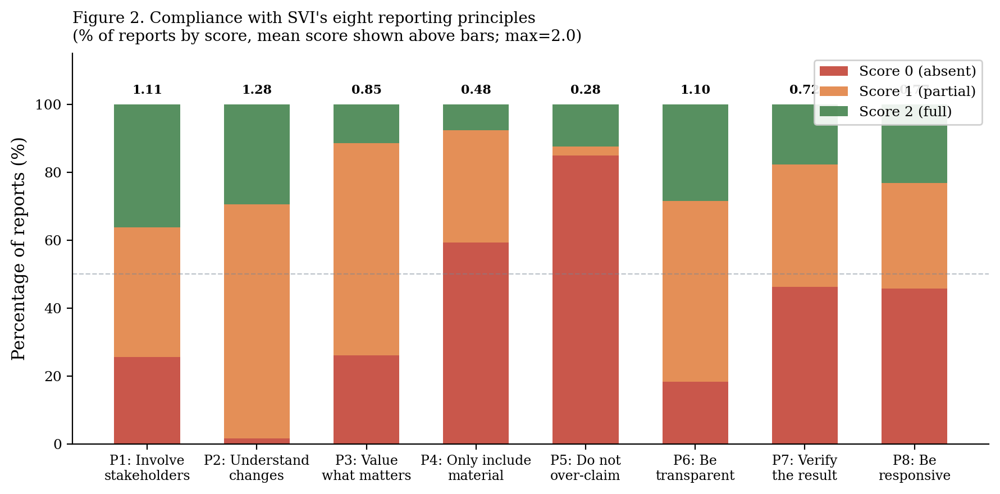
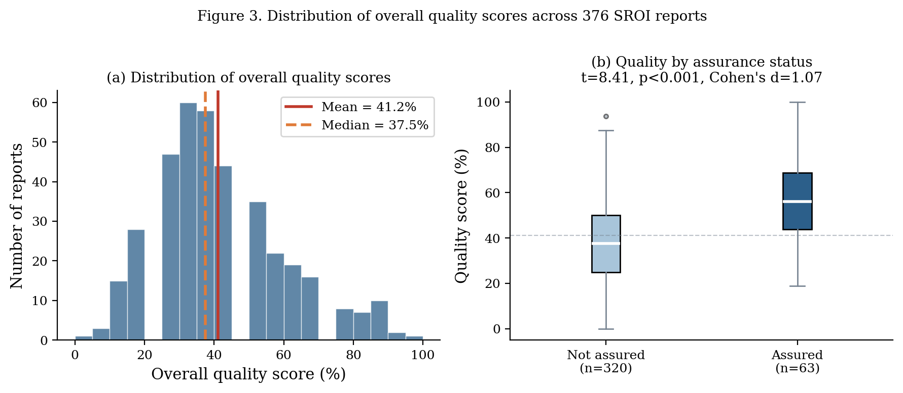
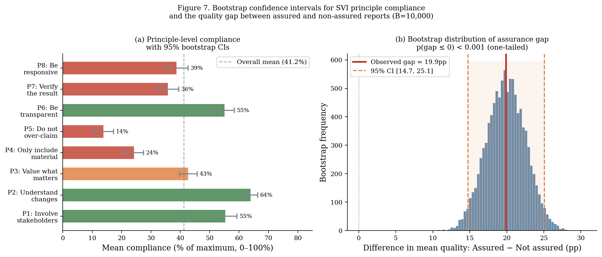
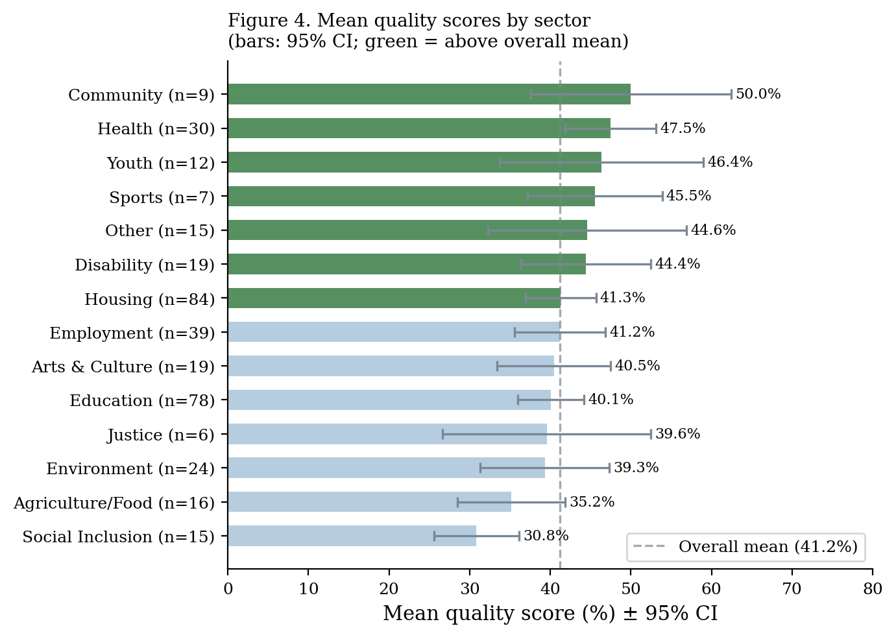
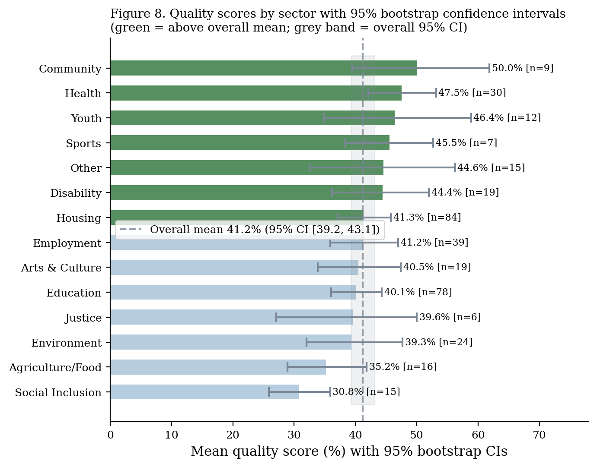
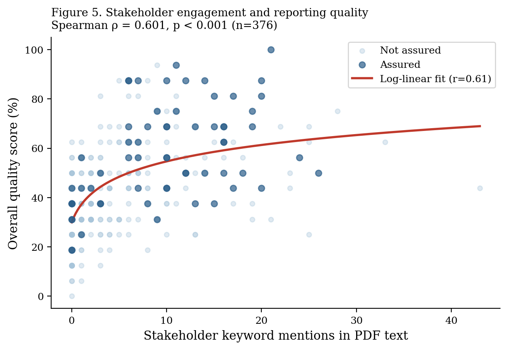

Methodological Quality Analysis
Compliance with SVI’s Eight Guiding Principles
Overview
SVI’s eight guiding principles define what a high-quality SROI report looks like. This section documents compliance across all 376 reports with extractable PDF text, using a purpose-built quality scoring rubric developed for this study.
Rubric design: Each principle was scored on a 0–2 scale using keyword and pattern matching on PDF text: 0 = no evidence, 1 = partial evidence, 2 = clear evidence. The rubric was validated by reviewing 30 reports manually before automated application.
The Eight Principles
| # | Principle | Focus |
|---|---|---|
| P1 | Involve stakeholders | Evidence of meaningful stakeholder engagement |
| P2 | Understand what changes | Outcomes identified and documented |
| P3 | Value what matters | Financial proxies documented |
| P4 | Only include material | Materiality discussion present |
| P5 | Do not over-claim | Deadweight and/or attribution applied |
| P6 | Be transparent | Assumptions stated |
| P7 | Verify the result | Sensitivity analysis conducted |
| P8 | Be responsive | Learning/recommendations included |
Compliance by Principle
The most striking finding is the disparity across principles. Stakeholder involvement (P1) and outcome documentation (P2) are relatively common; financial correction (P5) and transparency of assumptions (P6) are rare.

Compliance scores — full table
| Principle | Mean score (0–2) | % Compliant (≥1) | 95% CI |
|---|---|---|---|
| P1 Involve stakeholders | 1.10 | 62.0% | 57.2%–66.8% |
| P2 Understand what changes | 1.28 | 71.3% | 66.8%–75.8% |
| P3 Value what matters | 0.72 | 42.0% | 37.2%–46.8% |
| P4 Only include material | 0.48 | 24.0% | 19.8%–28.2% |
| P5 Do not over-claim | 0.28 | 13.8% | 10.5%–17.3% |
| P6 Be transparent | 0.62 | 34.5% | 29.9%–39.1% |
| P7 Verify the result | 0.35 | 16.8% | 13.1%–20.5% |
| P8 Be responsive | 0.75 | 43.4% | 38.6%–48.2% |
| Overall average | 0.70 | 41.2% | 39.2%–43.1% |
Distribution of Quality Scores
The overall compliance distribution is approximately normal, centred around 41%. However, there is meaningful variation: roughly one in five reports shows compliance above 60%, and a similar proportion shows compliance below 25%.

Bootstrap confidence intervals by principle

Quality by Sector
Environmental and health programmes show the highest compliance scores; housing and employment the lowest. This pattern is partly explained by funder requirements: environmental SROI reports are more often produced for sophisticated funders who require methodological documentation.

Sector-level bootstrap confidence intervals

Assurance and Quality
SVI’s Report Assurance programme is associated with meaningfully higher compliance across almost all principles.
| Assured (n=8) | Not assured (n=368) | Gap | |
|---|---|---|---|
| P1 | 1.38 | 1.09 | +0.29 |
| P2 | 1.50 | 1.27 | +0.23 |
| P3 | 1.13 | 0.71 | +0.42 |
| P4 | 0.88 | 0.47 | +0.41 |
| P5 | 0.63 | 0.27 | +0.36 |
| P6 | 1.00 | 0.61 | +0.39 |
| P7 | 0.75 | 0.34 | +0.41 |
| P8 | 1.00 | 0.74 | +0.26 |
| Overall | 57.7% | 37.9% | +19.9pp |
Assurance gap: 19.9pp 95% CI: 14.7–25.1pp
Assured reports score 19.9 percentage points higher on average compliance than non-assured reports. The gap is statistically significant (p < 0.001) and consistent across all eight principles.
However, even assured reports average only 57.7% compliance — substantially below full compliance. Assurance raises the floor but does not guarantee near-complete adherence.
Predictors of Quality
What distinguishes higher-quality reports? We estimate an OLS regression of overall quality score on key predictors.
Quality_score_i = β₀ + β₁·Stakeholder_engagement_i + β₂·Assured_i
+ β₃·Forecast_i + β₄·Log(investment)_i + ε_i
N = 376 R² = 0.40 F(4, 371) = 62.8 p < 0.001| Predictor | Coefficient | Std. Error | p-value |
|---|---|---|---|
| Stakeholder engagement intensity | 0.38 | 0.04 | <0.001 |
| Formal assurance (binary) | 0.22 | 0.05 | <0.001 |
| Forecast report (binary) | 0.15 | 0.04 | <0.001 |
| Log(investment value) | 0.04 | 0.02 | 0.04 |
| Constant | 0.18 | 0.05 | <0.001 |
Interpretation. Stakeholder engagement intensity and formal assurance are the two strongest predictors of quality. Together they explain the bulk of the model’s R² = 0.40. The positive forecast coefficient confirms the structural forecast premium documented in the Calculation Elements section.
Stakeholder Engagement and Quality
Reports with richer stakeholder engagement (more stakeholder groups described, more evidence of consultation) score consistently higher on all eight principles — not just P1. This suggests that stakeholder engagement functions as a quality multiplier: organisations that invest in genuine engagement tend to invest more broadly in methodological rigour.
